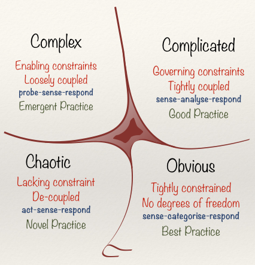

# Cynefin framework

The Cynefin Framework is a tool created by Dave Snowden that helps you contextualise problems. Tension between arguments tend to happen when the arguments are given for a different contexts. It is important distinguish a framework and a model: a model represents a reality, a framework makes sense of reality.
One way for you to understand in which context you’re in is to understand the cause-and-effect relationship of a solution:
- Obvious: Clear cause-and-effect of a solution
- Complicated: Cause-and-effect can be understood with the help of expert knowledge in the solution
- Complex: Everyone can’t fully understand the cause-and-effect of a solution
- Chaos: There is no relationship between the cause-and-effect.
Disorder is a context that’s missing in the picture. You’re in disorder context when you don’t know in which context you’re in, or none of the contexts are dominant. You have to gather more information as fast as you could and move out of the disorder context.
I first discovered this when I saw Dave Snowden’s talk in the Craft Conference, unfortunately I can’t find the recording of that talk. You may find this similar talk useful: Complex Adaptive Systems - Dave Snowden - DDD Europe 2018 - YouTube. I also find the article published by Liz Keogh to be the one that I visit periodically to grasp a better understanding of Cynefin: Cynefin for Everyone! | Liz Keogh, lunivore.
# References
The quiddity of Cynefin - Cognitive Edge
A model seeks to represent reality, a framework is a way of looking, a way of making sense which is very different